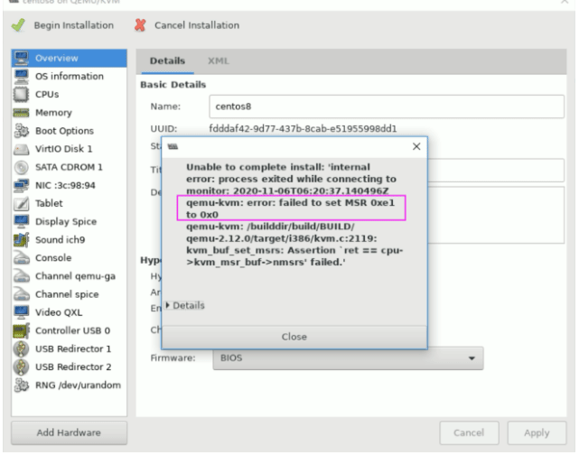

KVM 是基于虚拟化扩展（Intel VT 或者 AMD-V）的 X86 硬件的开源的 Linux
原生的全虚拟化解决方案。KVM 中，虚拟机被实现为常规的 Linux 进程，由标准
Linux 调度程序进行调度；虚机的每个虚拟CPU 被实现为一个常规的 Linux
进程。这使得 KVM 能够使用 Linux 内核的已有功能。
# apt install qemu-kvm virt-manager libvirt-daemon-system# kvm-ok #验证是否支持kvm,只有Ubuntu支持,CentOS 不支持
INFO: /dev/kvm exists
KVM acceleration can be used
范例:
[root@ubuntu1804 ~]#apt -y install qemu-kvm virt-manager libvirt-daemon-system
[root@ubuntu1804 ~]#ip a
1: lo: <LOOPBACK,UP,LOWER_UP> mtu 65536 qdisc noqueue state UNKNOWN group
default qlen 1000
link/loopback 00:00:00:00:00:00 brd 00:00:00:00:00:00
inet 127.0.0.1/8 scope host lo
valid_lft forever preferred_lft forever
inet6 ::1/128 scope host
valid_lft forever preferred_lft forever
2: eth0: <BROADCAST,MULTICAST,UP,LOWER_UP> mtu 1500 qdisc fq_codel state UP
group default qlen 1000
link/ether 00:0c:29:40:27:06 brd ff:ff:ff:ff:ff:ff
inet 10.0.0.100/24 brd 10.0.0.255 scope global eth0
valid_lft forever preferred_lft forever
inet6 fe80::20c:29ff:fe40:2706/64 scope link
valid_lft forever preferred_lft forever
3: virbr0: <NO-CARRIER,BROADCAST,MULTICAST,UP> mtu 1500 qdisc noqueue state DOWN
group default qlen 1000
link/ether 52:54:00:8d:a6:fe brd ff:ff:ff:ff:ff:ff
inet 192.168.122.1/24 brd 192.168.122.255 scope global virbr0
valid_lft forever preferred_lft forever
4: virbr0-nic: <BROADCAST,MULTICAST> mtu 1500 qdisc fq_codel master virbr0 state
DOWN group default qlen 1000
link/ether 52:54:00:8d:a6:fe brd ff:ff:ff:ff:ff:ff
#如果没有开启CPU虚拟化功能会提示以下信息
[root@ubuntu1804 ~]#kvm-ok
INFO: Your CPU does not support KVM extensions
KVM acceleration can NOT be used
#添加CPU的虚拟化支持再执行
[root@ubuntu1804 ~]#kvm-ok
INFO: /dev/kvm exists
KVM acceleration can be used
图形化工具 virt-manager
范例: CentOS 上管理工具 virt-manager
[root@centos8 ~]#export DISPLAY=10.0.0.1:0.0
[root@centos8 ~]#virt-manager
[root@centos8 ~]#libGL error: No matching fbConfigs or visuals found
libGL error: failed to load driver: swrast
[root@centos8 ~]#ip a
1: lo: <LOOPBACK,UP,LOWER_UP> mtu 65536 qdisc noqueue state UNKNOWN group
default qlen 1000
link/loopback 00:00:00:00:00:00 brd 00:00:00:00:00:00
inet 127.0.0.1/8 scope host lo
valid_lft forever preferred_lft forever
inet6 ::1/128 scope host
valid_lft forever preferred_lft forever
2: eth0: <BROADCAST,MULTICAST,UP,LOWER_UP> mtu 1500 qdisc fq_codel state UP
group default qlen 1000
link/ether 00:0c:29:8a:51:21 brd ff:ff:ff:ff:ff:ff
inet 10.0.0.8/24 brd 10.0.0.255 scope global noprefixroute eth0
valid_lft forever preferred_lft forever
inet6 fe80::20c:29ff:fe8a:5121/64 scope link
valid_lft forever preferred_lft forever
3: virbr0: <NO-CARRIER,BROADCAST,MULTICAST,UP> mtu 1500 qdisc noqueue state DOWN
group default qlen 1000
link/ether 52:54:00:97:eb:e3 brd ff:ff:ff:ff:ff:ff
inet 192.168.122.1/24 brd 192.168.122.255 scope global virbr0
valid_lft forever preferred_lft forever
4: virbr0-nic: <BROADCAST,MULTICAST> mtu 1500 qdisc fq_codel master virbr0 state
DOWN group default qlen 1000
link/ether 52:54:00:97:eb:e3 brd ff:ff:ff:ff:ff:ff
[root@centos8 ~]#grep -R 192.168.122.1 /etc/libvirt/*
/etc/libvirt/qemu/networks/autostart/default.xml: <ip address='192.168.122.1'netmask='255.255.255.0'>
/etc/libvirt/qemu/networks/default.xml: <ip address='192.168.122.1'netmask='255.255.255.0'>root@centos8 ~]#ip a show virbr0
3: virbr0: <NO-CARRIER,BROADCAST,MULTICAST,UP> mtu 1500 qdisc noqueue state DOWN
group default qlen 1000
link/ether 52:54:00:97:eb:e3 brd ff:ff:ff:ff:ff:ff
inet 192.168.122.1/24 brd 192.168.122.255 scope global virbr0
valid_lft forever preferred_lft forever
#网桥信息
[root@centos8 ~]#cat /etc/libvirt/qemu/networks/default.xml
<!--
WARNING: THIS IS AN AUTO-GENERATED FILE. CHANGES TO IT ARE LIKELY TO BE
OVERWRITTEN AND LOST. Changes to this xml configuration should be made using:
virsh net-edit default
or other application using the libvirt API.
-->
<network>
<name>default</name>
<uuid>1ebc4504-5da9-4b7e-b367-90b8cb20029b</uuid>
<forward mode='nat'/>
<bridge name='virbr0'stp='on'delay='0'/>
<mac address='52:54:00:97:eb:e3'/>
<ip address='192.168.122.1'netmask='255.255.255.0'>
<dhcp>
<range start='192.168.122.2'end='192.168.122.254'/>
</dhcp>
</ip>
</network>
#查看网桥信息
[root@centos8 ~]#nmcli connection show virbr0
connection.id: virbr0
connection.uuid: 54c671c1-28be-4ce7-8a0e-30ee0ecdca64
connection.stable-id: --
connection.type: bridge
connection.interface-name: virbr0
connection.autoconnect: no
connection.autoconnect-priority: 0
connection.autoconnect-retries: -1 (default)
connection.multi-connect: 0 (default)
connection.auth-retries: -1
connection.timestamp: 1596945412
connection.read-only: no
connection.permissions: --
connection.zone: --
connection.master: --
connection.slave-type: --
connection.autoconnect-slaves: -1 (default)
connection.secondaries: --
connection.gateway-ping-timeout: 0
connection.metered: unknown
connection.lldp: default
connection.mdns: -1 (default)
connection.llmnr: -1 (default)
connection.wait-device-timeout: -1
ipv4.method: manual
ipv4.dns: --
ipv4.dns-search: --
ipv4.dns-options: --
ipv4.dns-priority: 100
ipv4.addresses: 192.168.122.1/24
ipv4.gateway: --
ipv4.routes: --
ipv4.route-metric: -1
ipv4.route-table: 0 (unspec)
ipv4.routing-rules: --
ipv4.ignore-auto-routes: no
ipv4.ignore-auto-dns: no
ipv4.dhcp-client-id: --
ipv4.dhcp-iaid: --
ipv4.dhcp-timeout: 0 (default)
ipv4.dhcp-send-hostname: yes
ipv4.dhcp-hostname: --
ipv4.dhcp-fqdn: --
ipv4.dhcp-hostname-flags: 0x0 (none)
ipv4.never-default: no
ipv4.may-fail: yes
ipv4.dad-timeout: -1 (default)
ipv6.method: ignore
ipv6.dns: --
ipv6.dns-search: --
ipv6.dns-options: --
ipv6.dns-priority: 100
ipv6.addresses: --
ipv6.gateway: --
ipv6.routes: --
ipv6.route-metric: -1
ipv6.route-table: 0 (unspec)
ipv6.routing-rules: --
ipv6.ignore-auto-routes: no
ipv6.ignore-auto-dns: no
ipv6.never-default: no
ipv6.may-fail: yes
ipv6.ip6-privacy: -1 (unknown)
ipv6.addr-gen-mode: stable-privacy
ipv6.ra-timeout: 0 (default)
ipv6.dhcp-duid: --
ipv6.dhcp-iaid: --
ipv6.dhcp-timeout: 0 (default)
ipv6.dhcp-send-hostname: yes
ipv6.dhcp-hostname: --
ipv6.dhcp-hostname-flags: 0x0 (none)
ipv6.token: --
bridge.mac-address: --
bridge.stp: yes
bridge.priority: 32768
bridge.forward-delay: 2
bridge.hello-time: 2
bridge.max-age: 20
bridge.ageing-time: 300
bridge.group-forward-mask: 0
bridge.multicast-snooping: yes
bridge.vlan-filtering: no
bridge.vlan-default-pvid: 1
bridge.vlans: --
proxy.method: none
proxy.browser-only: no
proxy.pac-url: --
proxy.pac-script: --
GENERAL.NAME: virbr0
GENERAL.UUID: 54c671c1-28be-4ce7-8a0e-30ee0ecdca64
GENERAL.DEVICES: virbr0
GENERAL.IP-IFACE: virbr0
GENERAL.STATE: activated
GENERAL.DEFAULT: no
GENERAL.DEFAULT6: no
GENERAL.SPEC-OBJECT: --
GENERAL.VPN: no
GENERAL.DBUS-PATH:
/org/freedesktop/NetworkManager/ActiveConnection/3
GENERAL.CON-PATH:
/org/freedesktop/NetworkManager/Settings/2
GENERAL.ZONE: --
GENERAL.MASTER-PATH: --
IP4.ADDRESS[1]: 192.168.122.1/24
IP4.GATEWAY: --
IP4.ROUTE[1]: dst = 192.168.122.0/24, nh = 0.0.0.0, mt
= 0
IP6.GATEWAY: --
[root@centos8 ~]#
范例: Ubuntu 网络配置
[root@ubuntu1804 ~]#ip a
1: lo: <LOOPBACK,UP,LOWER_UP> mtu 65536 qdisc noqueue state UNKNOWN group
default qlen 1000
link/loopback 00:00:00:00:00:00 brd 00:00:00:00:00:00
inet 127.0.0.1/8 scope host lo
valid_lft forever preferred_lft forever
inet6 ::1/128 scope host
valid_lft forever preferred_lft forever
2: eth0: <BROADCAST,MULTICAST,UP,LOWER_UP> mtu 1500 qdisc fq_codel state UP
group default qlen 1000
link/ether 00:0c:29:40:27:06 brd ff:ff:ff:ff:ff:ff
inet 10.0.0.100/24 brd 10.0.0.255 scope global eth0
valid_lft forever preferred_lft forever
inet6 fe80::20c:29ff:fe40:2706/64 scope link
valid_lft forever preferred_lft forever
3: virbr0: <NO-CARRIER,BROADCAST,MULTICAST,UP> mtu 1500 qdisc noqueue state DOWN
group default qlen 1000
link/ether 52:54:00:8d:a6:fe brd ff:ff:ff:ff:ff:ff
inet 192.168.122.1/24 brd 192.168.122.255 scope global virbr0
valid_lft forever preferred_lft forever
4: virbr0-nic: <BROADCAST,MULTICAST> mtu 1500 qdisc fq_codel master virbr0 state
DOWN group default qlen 1000
link/ether 52:54:00:8d:a6:fe brd ff:ff:ff:ff:ff:ff
[root@ubuntu1804 ~]#brctl show
bridge name bridge id STP enabled interfaces
virbr0 8000.5254008da6fe yes virbr0-nic
[root@ubuntu1804 ~]#cat /etc/libvirt/qemu/networks/default.xml
<!--
WARNING: THIS IS AN AUTO-GENERATED FILE. CHANGES TO IT ARE LIKELY TO BE
OVERWRITTEN AND LOST. Changes to this xml configuration should be made using:
virsh net-edit default
or other application using the libvirt API.
-->
<network>
<name>default</name>
<uuid>a3235b68-6dc0-4951-8a35-7a60a567f1a7</uuid>
<forward mode='nat'/>
<bridge name='virbr0'stp='on'delay='0'/>
<mac address='52:54:00:8d:a6:fe'/>
<ip address='192.168.122.1'netmask='255.255.255.0'>
<dhcp>
<range start='192.168.122.2'end='192.168.122.254'/>
</dhcp>
</ip>
</network>
AMD CPU 使用virt-manager 或 virt-install
在创建虚拟机可能会出错,用下面方法解决
AMD CPU 使用virt-manager创建虚拟机出错提示

AMD CPU 使用virt-install创建虚拟机出错提示
[root@centos8 ~]#virt-install --virt-type kvm --name centos7 --ram 1024 --vcpus
2 --cdrom=/data/isos/CentOS-7-x86_64-Minimal-2003.iso --disk
path=/var/lib/libvirt/images/centos7.qcow2 --network network=default --graphics
vnc,listen=0.0.0.0 --noautoconsole
WARNING No operating system detected, VM performance may suffer. Specify an OS
with --os-variant for optimal results.
Starting install...
ERROR internal error: qemu unexpectedly closed the monitor: 2020-08-
09T15:57:08.872365Z qemu-kvm: error: failed to set MSR 0xe1 to 0x0
qemu-kvm: /builddir/build/BUILD/qemu-2.12.0/target/i386/kvm.c:2119:
kvm_buf_set_msrs: Assertion `ret == cpu->kvm_msr_buf->nmsrs' failed.Domain installation does not appear to have been successful.If it was, you can restart your domain by running:virsh --connect qemu:///system start centos7otherwise, please restart your installation.
#创建磁盘文件
[root@centos8 ~]#qemu-img create -f qcow2 /var/lib/libvirt/images/Windows-2008_r2-x86_64.qcow2 200G
#查看支持的windows版本
[root@centos8 ~]#osinfo-query os| grep win
win1.0 | Microsoft Windows 1.0 | 1.0 | http://microsoft.com/win/1.0
win10 | Microsoft Windows 10 |10.0 | http://microsoft.com/win/10
win2.0 | Microsoft Windows 2.0 | 2.0 | http://microsoft.com/win/2.0
win2.1 | Microsoft Windows 2.1 | 2.1 | http://microsoft.com/win/2.1
win2k | Microsoft Windows 2000 | 5.0 | http://microsoft.com/win/2k
win2k12 | Microsoft Windows Server 2012 | 6.3 | http://microsoft.com/win/2k12
win2k12r2 | Microsoft Windows Server 2012 R2 | 6.3 | http://microsoft.com/win/2k12r2
win2k16 | Microsoft Windows Server 2016 |10.0 | http://microsoft.com/win/2k16
win2k19 | Microsoft Windows Server 2019 |10.0 | http://microsoft.com/win/2k19
win2k3 | Microsoft Windows Server 2003 | 5.2 | http://microsoft.com/win/2k3
win2k3r2 | Microsoft Windows Server 2003 R2 | 5.2 | http://microsoft.com/win/2k3r2
win2k8 | Microsoft Windows Server 2008 | 6.0 | http://microsoft.com/win/2k8
win2k8r2 | Microsoft Windows Server 2008 R2 | 6.1 | http://microsoft.com/win/2k8r2
win3.1 | Microsoft Windows 3.1 | 3.1 | http://microsoft.com/win/3.1
win7 | Microsoft Windows 7 | 6.1 | http://microsoft.com/win/7
win8 | Microsoft Windows 8 | 6.2 | http://microsoft.com/win/8
win8.1 | Microsoft Windows 8.1 | 6.3 | http://microsoft.com/win/8.1
win95 | Microsoft Windows 95 | 4.0 | http://microsoft.com/win/95
win98 | Microsoft Windows 98 | 4.1 | http://microsoft.com/win/98
winme | Microsoft Windows Millennium Edition | 4.9 | http://microsoft.com/win/me
winnt3.1 | Microsoft Windows NT Server 3.1 | 3.1 | http://microsoft.com/winnt/3.1
winnt3.5 | Microsoft Windows NT Server 3.5 | 3.5 | http://microsoft.com/winnt/3.5
winnt3.51 | Microsoft Windows NT Server 3.51 |3.51 | http://microsoft.com/winnt/3.51
winnt4.0 | Microsoft Windows NT Server 4.0 | 4.0 | http://microsoft.com/winnt/4.0
winvista | Microsoft Windows Vista | 6.0 | http://microsoft.com/win/vista
winxp | Microsoft Windows XP | 5.1 | http://microsoft.com/win/xp
#创建 Windows 虚拟机
[root@centos8 ~]#virt-install --virt-type kvm --name Win_2008_r2-x86_64 --memory 3072 --vcpus=2 --os-variant=win2k8r2 --cdrom=/data/isos/cn_windows_server_2008_r2_standard_enterprise_datacenter_and_web_with_sp1_vl_build_x64_dvd_617396.iso --diskpath=/var/lib/libvirt/images/Windows-2008_r2-x86_64.qcow2,format=qcow2,bus=virtio --disk path=/data/isos/virtio-win-0.1.141_amd64.vfd,device=floppy --network bridge=virbr0,model=virtio --graphics vnc,listen=0.0.0.0 --noautoconsole --autostart
Starting install...
Domain installation still in progress. You can reconnect to
the console to complete the installation process.
[root@centos8 ~]#virt-manager
[root@centos8 ~]#yum info qemu-guest-agent
Last metadata expiration check: 2:46:09 ago on Thu 17 Sep 2020 09:08:54 AM CST.
Available Packages
Name : qemu-guest-agent
Epoch : 15
Version : 2.12.0
Release : 99.module_el8.2.0+320+13f867d7
Architecture : x86_64
Size : 216 k
Source : qemu-kvm-2.12.0-99.module_el8.2.0+320+13f867d7.src.rpm
Repository : AppStream
Summary : QEMU guest agent
URL : http://www.qemu.org/
License : GPLv2 and GPLv2+ and CC-BY
Description : qemu-kvm is an open source virtualizer that provides hardware
emulation for
: the KVM hypervisor.
:
: This package provides an agent to run inside guests, which
communicates
: with the host over a virtio-serial channel named
"org.qemu.guest_agent.0"
:
: This package does not need to be installed on the host OS.
[root@centos8 ~]#yum -y install qemu-guest-agent
[root@centos8 ~]#virsh list
Id Name State
----------------------------------------------------
2 centos8 running
3 Win_2008_r2-x86_64 running
[root@centos8 ~]#systemctl stop libvirtd
[root@centos8 ~]#virsh list
error: failed to connect to the hypervisor
error: Failed to connect socket to '/var/run/libvirt/libvirt-sock': No such file
or directory
#virt-manager工具也无法连接虚拟机
[root@centos8 ~]#systemctl start libvirtd
[root@centos8 ~]#virsh list
Id Name State
----------------------------------------------------
2 centos8 running
3 Win_2008_r2-x86_64 running
#virt-manager工具也恢复连接虚拟机
[root@localhost ~]#yum -y install usbutils
[root@localhost ~]# lsusb
Bus 002 Device 002: ID 0951:1666 Kingston Technology DataTraveler 100 G3/G4/SE9
G2
Bus 002 Device 001: ID 1d6b:0003 Linux Foundation 3.0 root hub
Bus 001 Device 002: ID 0627:0001 Adomax Technology Co., Ltd
Bus 001 Device 001: ID 1d6b:0002 Linux Foundation 2.0 root hub
[root@localhost ~]# lsblk
NAME MAJ:MIN RM SIZE RO TYPE MOUNTPOINT
sda 8:0 1 28.9G 0 disk
└─sda1 8:1 1 28.9G 0 part
sr0 11:0 1 393.4M 0 rom
vda 252:0 0 20G 0 disk
├─vda1 252:1 0 1G 0 part /boot
└─vda2 252:2 0 19G 0 part
├─cl-root 253:0 0 17G 0 lvm /
└─cl-swap 253:1 0 2G 0 lvm [SWAP]
重定向USB设备
重定向指将客户端的物理设备重定向到虚拟机中
virt-manager–"Virtual Machine"–"Redirect USB device"
查看到新加的USB设备
远程管理KVM宿主机
可以连接到远程的宿主机进行虚拟机的管理
exportDISPLAY=10.0.0.1:0.0
virt-manager
File–Add Connection
解决上面问题的方法
#方法1:在本机安装openssh-askpass包
[root@centos8 ~]#yum -y install openssh-askpass
#方法2:实现基于本机到远程主机的key验证
[root@centos8 ~]#ssh-copy-id 10.0.0.18
/usr/bin/ssh-copy-id: INFO: Source of key(s) to be installed:
"/root/.ssh/id_rsa.pub"
The authenticity of host '10.0.0.18 (10.0.0.18)' can't be established.ECDSA key fingerprint is SHA256:divKS+okAaeOzwWk/rHnrmZXWo3DUBPkkAnbofk+rbA.Are you sure you want to continue connecting (yes/no/[fingerprint])? yes/usr/bin/ssh-copy-id: INFO: attempting to log in with the new key(s), to filterout any that are already installed/usr/bin/ssh-copy-id: INFO: 1 key(s) remain to be installed -- if you areprompted now it is to install the new keysroot@10.0.0.18's password:
Number of key(s) added: 1
Now try logging into the machine, with: "ssh '10.0.0.18'"
and check to make sure that only the key(s) you wanted were added.
[root@centos8 ~]#virsh --help
virsh [options]... [<command_string>]
virsh [options]... <command> [args...]
options:
-c | --connect=URI hypervisor connection URI
-d | --debug=NUM debug level [0-4]
-e | --escape <char> set escape sequence for console
-h | --help this help
-k | --keepalive-interval=NUM
keepalive interval in seconds, 0 for disable
-K | --keepalive-count=NUM
number of possible missed keepalive messages
-l | --log=FILE output logging to file
-q | --quiet quiet mode
-r | --readonly connect readonly
-t | --timing print timing information
-v short version
-V long version
--version[=TYPE] version, TYPE is short or long (default short)
[root@centos8 ~]#virsh help list
NAME
list - list domains
SYNOPSIS
list [--inactive] [--all] [--transient] [--persistent] [--with-snapshot] [--
without-snapshot] [--state-running] [--state-paused] [--state-shutoff] [--state-
other] [--autostart] [--no-autostart] [--with-managed-save] [--without-managed-
save] [--uuid] [--name] [--table] [--managed-save] [--title]
DESCRIPTION
Returns list of domains.
OPTIONS
--inactive list inactive domains 列出不活动的虚拟机
--all list inactive & active domains 列出所有
--transient list transient domains
--persistent list persistent domains
--with-snapshot list domains with existing snapshot
--without-snapshot list domains without a snapshot
--state-running list domains in running state
--state-paused list domains in paused state
--state-shutoff list domains in shutoff state
--state-other list domains in other states
--autostart list domains with autostart enabled 查看开机自启动的虚拟机
--no-autostart list domains with autostart disabled
--with-managed-save list domains with managed save state
--without-managed-save list domains without managed save
--uuid list uuid's only --name list domain names only --table list table (default) --managed-save mark inactive domains with managed save state --title show domain title
启动和关闭虚拟机
#查看当前启动的虚拟机
[root@centos8 ~]#virsh list
Id Name State
----------------------------------------------------
1 Win_2008_r2-x86_64 running
#查看所有虚拟机
[root@centos8 ~]#virsh list --all
Id Name State
----------------------------------------------------
1 Win_2008_r2-x86_64 running
- centos7 shut off
- centos8 shut off
- centos8-vm2 shut off
- centos8-vm3 shut off
- centos8-vm4 shut off
#启动
[root@centos8 ~]#virsh start centos8
Domain centos8 started
[root@centos8 ~]#virsh list
Id Name State
----------------------------------------------------
1 Win_2008_r2-x86_64 running
2 centos8 running
#正常关机
[root@centos8 ~]#virsh shutdown 1
Domain 1 is being shutdown
[root@centos8 ~]#virsh list
Id Name State
----------------------------------------------------
1 Win_2008_r2-x86_64 running
2 centos8 running
#强制关机
[root@centos8 ~]#virsh destroy 1
Domain 1 destroyed
[root@centos8 ~]#virsh list
Id Name State
----------------------------------------------------
2 centos8 running
[root@centos8 ~]#virsh shutdown 2
Domain 2 is being shutdown
[root@centos8 ~]#virsh list
Id Name State
----------------------------------------------------
在virt-manager 中可以看到关机状态
查看虚拟机UUID,通过UUID启动关闭虚拟机
[root@centos8 ~]#virsh list
Id Name State
----------------------------------------------------
1 centos8 running
#查看虚拟机的UUID
[root@centos8 ~]#virsh domuuid 1
99765478-cfb1-4164-b038-f62004ccab9e
[root@centos8 ~]#virsh destroy 99765478-cfb1-4164-b038-f62004ccab9e
Domain 99765478-cfb1-4164-b038-f62004ccab9e destroyed
[root@centos8 ~]#virsh list
Id Name State
----------------------------------------------------
[root@centos8 ~]#virsh list --all
Id Name State
----------------------------------------------------
- centos7 shut off
- centos8 shut off
- centos8-vm2 shut off
- centos8-vm3 shut off
- centos8-vm4 shut off
- Win_2008_r2-x86_64 shut off
[root@centos8 ~]#virsh domuuid centos8
99765478-cfb1-4164-b038-f62004ccab9e
[root@centos8 ~]#virsh start 99765478-cfb1-4164-b038-f62004ccab9e
Domain centos8 started
[root@centos8 ~]#virsh list
Id Name State
----------------------------------------------------
2 centos8 running
[root@centos8 ~]#virsh domuuid centos8
99765478-cfb1-4164-b038-f62004ccab9e
暂停和恢复虚拟机
[root@centos8 ~]#virsh list
Id Name State
----------------------------------------------------
1 centos8 running
[root@centos8 ~]#virsh suspend centos8
Domain centos8 suspended
[root@centos8 ~]#virsh list
Id Name State
----------------------------------------------------
1 centos8 paused
#虚拟机暂停后,宿主机中还存有相关的进程
[root@centos8 ~]#ps aux|grep kvm
qemu 1699 36.9 16.0 4439296 1309300 ? Sl 10:10 5:28
/usr/libexec/qemu-kvm -name guest=centos8,debug-threads=on -S -object
secret,id=masterKey0,format=raw,file=/var/lib/libvirt/qemu/domain-
......
[root@centos8 ~]#virsh resume 1
Domain 1 resumed
[root@centos8 ~]#virsh list
Id Name State
----------------------------------------------------
1 centos8 running
配置虚拟机开机自动启动
[root@centos8 ~]#virsh list --all
Id Name State
----------------------------------------------------
1 Win_2008_r2-x86_64 running
- centos7 shut off
- centos8 shut off
- centos8-vm2 shut off
- centos8-vm3 shut off
- centos8-vm4 shut off
[root@centos8 ~]#virsh autostart centos8
Domain centos8 marked as autostarted
[root@centos8 ~]#ll /etc/libvirt/qemu/autostart/
total 0
lrwxrwxrwx 1 root root 29 Sep 17 18:53 centos8.xml ->
/etc/libvirt/qemu/centos8.xml
lrwxrwxrwx 1 root root 40 Sep 17 09:18 Win_2008_r2-x86_64.xml ->
/etc/libvirt/qemu/Win_2008_r2-x86_64.xml
[root@centos8 ~]#virsh list
Id Name State
----------------------------------------------------
1 Win_2008_r2-x86_64 running
[root@centos8 ~]#virsh autostart 1 --disable
Domain 1 unmarked as autostarted
[root@centos8 ~]#ll /etc/libvirt/qemu/autostart/
total 0
lrwxrwxrwx 1 root root 29 Sep 17 18:53 centos8.xml ->
/etc/libvirt/qemu/centos8.xml
[root@centos8 ~]#reboot
[root@centos8 ~]#virsh list
Id Name State
----------------------------------------------------
1 centos8 running
[root@centos8 ~]#qemu-img create -f raw -o ?
Supported options:
size Virtual disk size
[root@centos8 ~]#qemu-img create -f qcow2 -o ?
Supported options:
size Virtual disk size
compat Compatibility level (0.10 or 1.1)
backing_file File name of a base image
backing_fmt Image format of the base image
encryption Encrypt the image with format 'aes'. (Deprecated in favor of
encrypt.format=aes)
encrypt.format Encrypt the image, format choices: 'aes', 'luks'
encrypt.key-secret ID of secret providing qcow AES key or LUKS passphrase
encrypt.cipher-alg Name of encryption cipher algorithm
encrypt.cipher-mode Name of encryption cipher mode
encrypt.ivgen-alg Name of IV generator algorithm
encrypt.ivgen-hash-alg Name of IV generator hash algorithm
encrypt.hash-alg Name of encryption hash algorithm
encrypt.iter-time Time to spend in PBKDF in milliseconds
cluster_size qcow2 cluster size
preallocation Preallocation mode (allowed values: off, metadata, falloc,
full)
lazy_refcounts Postpone refcount updates
refcount_bits Width of a reference count entry in bits
[root@centos8 ~]#dd if=/dev/zero of=vm2.img bs=1M count=1024
1024+0 records in
1024+0 records out
1073741824 bytes (1.1 GB, 1.0 GiB) copied, 3.20332 s, 335 MB/s
[root@centos8 ~]#qemu-img info vm2.img
image: vm2.img
file format: raw
virtual size: 1.0G (1073741824 bytes)
disk size: 1.0G
[root@centos8 ~]#ls -hl vm2.img
-rw-r--r-- 1 root root 1.0G Sep 20 12:31 vm2.img
[root@centos8 ~]#du -h vm2.img
1.0G vm2.img
创建raw格式稀疏文件
[root@centos8 ~]#dd if=/dev/zero of=vm3.img bs=1M count=0 seek=1024
0+0 records in
0+0 records out
0 bytes copied, 9.2173e-05 s, 0.0 kB/s
[root@centos8 ~]#qemu-img info vm3.img
image: vm3.img
file format: raw
virtual size: 1.0G (1073741824 bytes)
disk size: 0
[root@centos8 ~]#ll -h vm3.img
-rw-r--r-- 1 root root 1.0G Sep 20 12:34 vm3.img
[root@centos8 ~]#du -h vm3.img
0 vm3.img
raw文件复制的格式控制
#复制非稀疏文件,默认也为非稀疏文件
[root@centos8 ~]#cp vm2.img vm2.img.bak
[root@centos8 ~]#du -h vm2.img.bak
1.0G vm2.img.bak
[root@centos8 ~]#ll -h vm2.img.bak
-rw-r--r-- 1 root root 1.0G Sep 20 12:38 vm2.img.bak
[root@centos8 ~]#qemu-img info vm2.img.bak
image: vm2.img.bak
file format: raw
virtual size: 1.0G (1073741824 bytes)
disk size: 1.0G
#复制稀疏文件,默认仍为稀疏文件
[root@centos8 ~]#cp vm3.img vm3.img.bak
[root@centos8 ~]#ll -h vm3.img.bak
-rw-r--r-- 1 root root 1.0G Sep 20 12:36 vm3.img.bak
[root@centos8 ~]#du -h vm3.img.bak
0 vm3.img.bak
[root@centos8 ~]#qemu-img info vm3.img.bak
image: vm3.img.bak
file format: raw
virtual size: 1.0G (1073741824 bytes)
disk size: 0
#指定将非稀疏文件复制为稀疏格式格式
[root@centos8 ~]#cp --sparse=always vm2.img vm2.img.bak2
[root@centos8 ~]#qemu-img info vm2.img
image: vm2.img
file format: raw
virtual size: 1.0G (1073741824 bytes)
disk size: 1.0G
[root@centos8 ~]#qemu-img info vm2.img.bak2
image: vm2.img.bak2
file format: raw
virtual size: 1.0G (1073741824 bytes)
disk size: 0
#指定将稀疏文件复制为非稀疏格式格式
[root@centos8 ~]#cp --sparse=never vm3.img vm3.img.bak2
[root@centos8 ~]#qemu-img info vm3.img
image: vm3.img
file format: raw
virtual size: 1.0G (1073741824 bytes)
disk size: 0
[root@centos8 ~]#qemu-img info vm3.img.bak2
image: vm3.img.bak2
file format: raw
virtual size: 1.0G (1073741824 bytes)
disk size: 1.0G
检查虚拟磁盘
对于关机状态的虚拟机磁盘,可以检查文件错误
[root@centos8 ~]#virsh list
Id Name State
----------------------------------------------------
2 centos8 running
[root@centos8 ~]#qemu-img check /var/lib/libvirt/images/centos8.qcow2
qemu-img: Could not open '/var/lib/libvirt/images/centos8.qcow2': Failed to get
shared "write" lock
Is another process using the image [/var/lib/libvirt/images/centos8.qcow2]?
[root@centos8 ~]#virsh suspend centos8
Domain centos8 suspended
[root@centos8 ~]#virsh list
Id Name State
----------------------------------------------------
2 centos8 paused
[root@centos8 ~]#qemu-img check /var/lib/libvirt/images/centos8.qcow2
qemu-img: Could not open '/var/lib/libvirt/images/centos8.qcow2': Failed to get
shared "write" lock
Is another process using the image [/var/lib/libvirt/images/centos8.qcow2]?
[root@centos8 ~]#qemu-img check /var/lib/libvirt/images/centos7.qcow2
No errors were found on the image.
25572/327680 = 7.80% allocated, 1.44% fragmented, 0.00% compressed clusters
Image end offset: 1676869632
[root@centos8 images]#virsh list
Id Name State
----------------------------------------------------
[root@centos8 images]#mv centos8.qcow2 centos8.qcow2.bak
#如果没有基础镜像文件,将无法启动使用后备差异虚拟磁盘的虚拟机
[root@centos8 images]#virsh start centos8-test1
error: Failed to start domain centos8-test1
error: Cannot access backing file '/var/lib/libvirt/images/centos8.qcow2' of
storage file '/var/lib/libvirt/images/centos8-test1.qcow2' (as uid:107,
gid:107): No such file or directory
#恢复基础镜像文件,再次启动虚拟机成功
[root@centos8 images]#mv centos8.qcow2.bak centos8.qcow2
[root@centos8 images]#virsh start centos8-test1
Domain centos8-test1 started
[root@centos8 images]#virsh list
Id Name State
----------------------------------------------------
10 centos8-test1 running
qemu-img snapshot [--object objectdef] [--image-opts] [-U] [-q] [-l | -a snapshot | -c snapshot | -d snapshot] filename
Parameters to snapshot subcommand:
'snapshot' is the name of the snapshot to create, apply or delete
'-a' applies a snapshot (revert disk to saved state)
'-c' creates a snapshot
'-d' deletes a snapshot
'-l' lists all snapshots in the given image
范例:
#查看块设备
[root@centos8 ~]#virsh domblklist centos7
Target Source
------------------------------------------------
hda /var/lib/libvirt/images/centos7.qcow2
hdb -
#查看快照,如果没有快照,则无显示信息
[root@centos8 ~]#qemu-img snapshot -l /var/lib/libvirt/images/centos7.qcow2
#创建快照
[root@centos8 ~]#qemu-img snapshot -c centos7-s1 /var/lib/libvirt/images/centos7.qcow2
#查看快照
[root@centos8 ~]#qemu-img snapshot -l /var/lib/libvirt/images/centos7.qcow2
Snapshot list:
ID TAG VM SIZE DATE VM CLOCK
1 centos7-s1 0 2020-09-20 17:39:59 00:00:00.000
#查看快照信息
[root@centos8 ~]#qemu-img info /var/lib/libvirt/images/centos7.qcow2
image: /var/lib/libvirt/images/centos7.qcow2
file format: qcow2
virtual size: 20G (21474836480 bytes)
disk size: 1.6G
cluster_size: 65536
Snapshot list:
ID TAG VM SIZE DATE VM CLOCK
1 centos7-s1 0 2020-09-20 17:39:59 00:00:00.000
Format specific information:
compat: 1.1
lazy refcounts: false
refcount bits: 16
corrupt: false
#删除文件,模拟破坏
[root@centos8 ~]#virsh snapshot-list centos8
Name Creation Time State
------------------------------------------------------------
#创建虚拟机快照
[root@centos8 ~]#virsh snapshot-create centos8
Domain snapshot 1600593611 created
[root@centos8 ~]#virsh snapshot-list centos8
Name Creation Time State
------------------------------------------------------------
1600593611 2020-09-20 17:20:11 +0800 shutoff
使用virsh 命令还原快照
[root@centos8 ~]#virsh list
Id Name State
----------------------------------------------------
#先关机后再还原快照
[root@centos8 ~]#virsh snapshot-revert centos8 --snapshotname 1600593611 --running
[root@centos8 ~]#virsh list
Id Name State
----------------------------------------------------
23 centos7 running
#删除快照
[root@centos8 ~]#virsh snapshot-delete centos8 --snapshotname 1600593611
Domain snapshot 1600593611 deleted
[root@centos8 ~]#virsh snapshot-list centos8
Name Creation Time State
------------------------------------------------------------
[root@centos8 ~]#
virt-manager 管理快照
虚拟机配置–View–Snapshot
还原快照
[root@centos8 ~]#ll /var/lib/libvirt/qemu/snapshot/centos8/
total 8
-rw------- 1 root root 5802 Aug 11 13:28 snapshot1.xml
[root@centos8 ~]#virsh pool-list --help
NAME
pool-list - list pools
SYNOPSIS
pool-list [--inactive] [--all] [--transient] [--persistent] [--autostart] [-
-no-autostart] [--type <string>] [--details] [--uuid] [--name]
DESCRIPTION
Returns list of pools.
OPTIONS
--inactive list inactive pools
--all list inactive & active pools
--transient list transient pools
--persistent list persistent pools
--autostart list pools with autostart enabled
--no-autostart list pools with autostart disabled
--type <string> only list pool of specified type(s) (if supported)
--details display extended details for pools
--uuid list UUID of active pools only
--name list name of active pools only
显示存储池信息
存储池相关配置文件都在下面目录存放
/etc/libvirt/storage/
范例: 显示存储池
[root@centos8 ~]#virsh pool-list
Name State Autostart
-------------------------------------------
default active yes
isos active yes
[root@centos8 ~]#virsh pool-list --uuid
b164fec8-1861-4f07-86ae-5023ea17f925
a707038c-c21b-4570-bdef-d94c00554daa
#通过存储池的名称查找UUID
[root@centos8 ~]#virsh pool-uuid default
b164fec8-1861-4f07-86ae-5023ea17f925
#通过UUID查找存储池的名称
[root@centos8 ~]#virsh pool-name b164fec8-1861-4f07-86ae-5023ea17f925
default
[root@centos8 ~]#virsh pool-info default
Name: default
UUID: b164fec8-1861-4f07-86ae-5023ea17f925
State: running
Persistent: yes
Autostart: yes
Capacity: 99.95 GiB
Allocation: 34.58 GiB
Available: 65.37 GiB
#每个存储池对应的配置文件
[root@centos8 ~]#ll /etc/libvirt/storage/
total 8
drwxr-xr-x 2 root root 41 Sep 13 19:28 autostart
-rw------- 1 root root 538 Sep 13 19:05 default.xml
-rw------- 1 root root 519 Sep 13 19:28 isos.xml
#开机加载存储池
[root@centos8 ~]#ll /etc/libvirt/storage/autostart/
total 0
lrwxrwxrwx 1 root root 32 Sep 13 19:05 default.xml ->/etc/libvirt/storage/default.xml
lrwxrwxrwx 1 root root 29 Sep 13 19:28 isos.xml -> /etc/libvirt/storage/isos.xml
[root@centos8 ~]#cat /etc/libvirt/storage/default.xml
<!--
WARNING: THIS IS AN AUTO-GENERATED FILE. CHANGES TO IT ARE LIKELY TO BE
OVERWRITTEN AND LOST. Changes to this xml configuration should be made using:
virsh pool-edit default
or other application using the libvirt API.
-->
<pool type='dir'>
<name>default</name>
<uuid>b164fec8-1861-4f07-86ae-5023ea17f925</uuid>
<capacity unit='bytes'>0</capacity>
<allocation unit='bytes'>0</allocation>
<available unit='bytes'>0</available>
<source>
</source>
<target>
<path>/var/lib/libvirt/images</path>
</target>
</pool>
[root@centos8 ~]#cat /etc/libvirt/storage/isos.xml
<!--
WARNING: THIS IS AN AUTO-GENERATED FILE. CHANGES TO IT ARE LIKELY TO BE
OVERWRITTEN AND LOST. Changes to this xml configuration should be made using:
virsh pool-edit isos
or other application using the libvirt API.
-->
<pool type='dir'>
<name>isos</name>
<uuid>a707038c-c21b-4570-bdef-d94c00554daa</uuid>
<capacity unit='bytes'>0</capacity>
<allocation unit='bytes'>0</allocation>
<available unit='bytes'>0</available>
<source>
</source>
<target>
<path>/data/isos</path>
</target>
</pool>
基于目录的存储池
创建存储池
#目录需要事先创建,否则虽然可以创建存储池,但无法直接启动,后期也可以先创建存储池,再使用 pool-build 自动创建目录
[root@centos8 ~]#mkdir /data/vm_images
#基于安装考虚可以设置权限
[root@centos8 ~]#chmod 700 /data/vm_images
#查看帮助
[root@centos8 ~]#virsh pool-define-as --help
#创建存储池
[root@centos8 ~]#virsh pool-define-as vm_images dir --target /data/vm_images
Pool vm_images defined
[root@centos8 ~]#virsh pool-list
Name State Autostart
-------------------------------------------
default active yes
isos active yes
[root@centos8 ~]#virsh pool-list --all
Name State Autostart
-------------------------------------------
default active yes
isos active yes
vm_images inactive no
#激活存储池
[root@centos8 ~]#virsh pool-start vm_images
Pool vm_images started
[root@centos8 ~]#virsh pool-list
Name State Autostart
-------------------------------------------
default active yes
isos active yes
vm_images active no
#激活存储池,并开机启动
[root@centos8 ~]#virsh pool-autostart vm_images
Pool vm_images marked as autostarted
[root@centos8 ~]#virsh pool-list
Name State Autostart
-------------------------------------------
default active yes
isos active yes
vm_images active yes
[root@centos8 ~]#ll /etc/libvirt/storage/
total 12
drwxr-xr-x 2 root root 62 Sep 20 18:44 autostart
-rw------- 1 root root 538 Sep 13 19:05 default.xml
-rw------- 1 root root 519 Sep 13 19:28 isos.xml
-rw------- 1 root root 534 Sep 20 18:42 vm_images.xml
[root@centos8 ~]#cat /etc/libvirt/storage/vm_images.xml
<!--
WARNING: THIS IS AN AUTO-GENERATED FILE. CHANGES TO IT ARE LIKELY TO BE
OVERWRITTEN AND LOST. Changes to this xml configuration should be made using:
virsh pool-edit vm_images
or other application using the libvirt API.
-->
<pool type='dir'>
<name>vm_images</name>
<uuid>cc851d99-1726-4cf9-8853-820441585bfa</uuid>
<capacity unit='bytes'>0</capacity>
<allocation unit='bytes'>0</allocation>
<available unit='bytes'>0</available>
<source>
</source>
<target>
<path>/data/vm_images</path>
</target>
</pool>
在virt-manager 工具可以管理和查看存储池
删除存储池
#先停止存储池后才能删除
[root@centos8 ~]#virsh pool-destroy --pool vm_images
Pool vm_images destroyed
[root@centos8 ~]#virsh pool-list --all
Name State Autostart
-------------------------------------------
default active yes
isos active yes
vm_images inactive yes
#删除存储池的相关数据目录
[root@centos8 ~]#virsh pool-delete --pool vm_images
Pool vm_images deleted
[root@centos8 ~]#ls /data
isos
#但存储池的配置还在
[root@centos8 ~]#virsh pool-list --all
Name State Autostart
-------------------------------------------
default active yes
isos active yes
vm_images inactive yes
#删除存储池配置文件
[root@centos8 ~]#virsh pool-undefine --pool vm_images
Pool vm_images has been undefined
[root@centos8 ~]#virsh pool-list --all
Name State Autostart
-------------------------------------------
default active yes
isos active yes
[root@centos8 ~]#ll /etc/libvirt/storage/
total 8
drwxr-xr-x 2 root root 41 Sep 20 18:54 autostart
-rw------- 1 root root 538 Sep 13 19:05 default.xml
-rw------- 1 root root 519 Sep 13 19:28 isos.xml
[root@centos8 ~]#lsblk
NAME MAJ:MIN RM SIZE RO TYPE MOUNTPOINT
sda 8:0 0 200G 0 disk
├─sda1 8:1 0 1G 0 part /boot
├─sda2 8:2 0 100G 0 part /
├─sda3 8:3 0 50G 0 part /data
├─sda4 8:4 0 1K 0 part
└─sda5 8:5 0 2G 0 part [SWAP]
sr0 11:0 1 7.7G 0 rom
[root@centos8 ~]#fdisk /dev/sda
Command (m for help): n
All primary partitions are in use.
Adding logical partition 6
First sector (320870400-419430399, default 320870400):
Last sector, +sectors or +size{K,M,G,T,P} (320870400-419430399, default
419430399): +10G
Created a new partition 6 of type 'Linux' and of size 10 GiB.
Command (m for help): w
The partition table has been altered.
Syncing disks.
[root@centos8 ~]#mkfs.ext4 /dev/sda6
[root@centos8 ~]#lsblk
NAME MAJ:MIN RM SIZE RO TYPE MOUNTPOINT
sda 8:0 0 200G 0 disk
├─sda1 8:1 0 1G 0 part /boot
├─sda2 8:2 0 100G 0 part /
├─sda3 8:3 0 50G 0 part /data
├─sda4 8:4 0 1K 0 part
├─sda5 8:5 0 2G 0 part [SWAP]
└─sda6 8:6 0 10G 0 part
sr0 11:0 1 7.7G 0 rom
#创建存储池定义
[root@centos8 ~]#virsh pool-define-as vm_images_fs fs --source-dev "/dev/sda6" --target "/vm_images"
Pool vm_images_fs defined
[root@centos8 ~]#virsh pool-list --all
Name State Autostart
-------------------------------------------
default active yes
isos active yes
vm_images_fs inactive no
[root@centos8 ~]#df
Filesystem 1K-blocks Used Available Use% Mounted on
devtmpfs 4050832 0 4050832 0% /dev
tmpfs 4067612 0 4067612 0% /dev/shm
tmpfs 4067612 9380 4058232 1% /run
tmpfs 4067612 0 4067612 0% /sys/fs/cgroup
/dev/sda2 104806400 36337664 68468736 35% /
/dev/sda3 52403200 12331584 40071616 24% /data
/dev/sda1 999320 120528 809980 13% /boot
tmpfs 813520 8 813512 1% /run/user/0
#因为没有挂载点无法启动
[root@centos8 ~]#virsh pool-start vm_images_fs
error: Failed to start pool vm_images_fs
error: internal error: Child process (/usr/bin/mount -t auto /dev/sda6
/vm_images) unexpected exit status 32: mount: /vm_images: mount point does not
exist.
#构建存储池会自动创建挂截点
[root@centos8 ~]#virsh pool-build vm_images_fs
Pool vm_images_fs built
[root@centos8 ~]#ll -d /vm_images/
drwx--x--x 2 root root 6 Sep 20 19:18 /vm_images/
#启动存储池,自动挂载
[root@centos8 ~]#virsh pool-start vm_images_fs
Pool vm_images_fs started
[root@centos8 ~]#df
Filesystem 1K-blocks Used Available Use% Mounted on
devtmpfs 4050832 0 4050832 0% /dev
tmpfs 4067612 0 4067612 0% /dev/shm
tmpfs 4067612 9384 4058228 1% /run
tmpfs 4067612 0 4067612 0% /sys/fs/cgroup
/dev/sda2 104806400 36337648 68468752 35% /
/dev/sda3 52403200 12331584 40071616 24% /data
/dev/sda1 999320 120528 809980 13% /boot
tmpfs 813520 8 813512 1% /run/user/0
/dev/sda6 10255636 36888 9678076 1% /vm_images
[root@centos8 ~]#virsh pool-info vm_images_fs
Name: vm_images_fs
UUID: 157759a3-46ce-49ed-ba9d-eaf71c6dde30
State: running
Persistent: yes
Autostart: no
Capacity: 9.78 GiB
Allocation: 36.02 MiB
Available: 9.75 GiB
[root@centos8 ~]#virsh pool-list --all
Name State Autostart
-------------------------------------------
default active yes
isos active yes
vm_images_fs active no
#由于没有设为自动启动,重启后不会挂载
[root@centos8 ~]#reboot
[root@centos8 ~]#df
Filesystem 1K-blocks Used Available Use% Mounted on
devtmpfs 4050832 0 4050832 0% /dev
tmpfs 4067612 0 4067612 0% /dev/shm
tmpfs 4067612 9372 4058240 1% /run
tmpfs 4067612 0 4067612 0% /sys/fs/cgroup
/dev/sda2 104806400 36339572 68466828 35% /
/dev/sda3 52403200 12331584 40071616 24% /data
/dev/sda1 999320 120528 809980 13% /boot
tmpfs 813520 0 813520 0% /run/user/0
[root@centos8 ~]#virsh pool-list --all
Name State Autostart
-------------------------------------------
default active yes
isos active yes
vm_images_fs inactive no
#设为自动启动
[root@centos8 ~]#virsh pool-autostart vm_images_fs
Pool vm_images_fs marked as autostarted
[root@centos8 ~]#virsh pool-list --all
Name State Autostart
-------------------------------------------
default active yes
isos active yes
vm_images_fs inactive yes
#重新启动自动启动存储池并挂载
[root@centos8 ~]#reboot
[root@centos8 ~]#virsh pool-list
Name State Autostart
-------------------------------------------
default active yes
isos active yes
vm_images_fs active yes
[root@centos8 ~]#df
Filesystem 1K-blocks Used Available Use% Mounted on
devtmpfs 4050824 0 4050824 0% /dev
tmpfs 4067604 0 4067604 0% /dev/shm
tmpfs 4067604 9364 4058240 1% /run
tmpfs 4067604 0 4067604 0% /sys/fs/cgroup
/dev/sda2 104806400 36340572 68465828 35% /
/dev/sda3 52403200 12331584 40071616 24% /data
/dev/sda1 999320 120528 809980 13% /boot
/dev/sda6 10255636 36888 9678076 1% /vm_images
tmpfs 813520 0 813520 0% /run/user/0
删除基于分区的存储池
[root@centos8 ~]#virsh pool-destroy vm_images_fs
Pool vm_images_fs destroyed
[root@centos8 ~]#virsh pool-delete vm_images_fs
Pool vm_images_fs deleted
[root@centos8 ~]#virsh pool-undefine vm_images_fs
Pool vm_images_fs has been undefined
[root@centos8 ~]#df
Filesystem 1K-blocks Used Available Use% Mounted on
devtmpfs 4050824 0 4050824 0% /dev
tmpfs 4067604 0 4067604 0% /dev/shm
tmpfs 4067604 9360 4058244 1% /run
tmpfs 4067604 0 4067604 0% /sys/fs/cgroup
/dev/sda2 104806400 36340696 68465704 35% /
/dev/sda3 52403200 12331584 40071616 24% /data
/dev/sda1 999320 120528 809980 13% /boot
tmpfs 813520 0 813520 0% /run/user/0
[root@centos8 ~]#ll /vm_images/
total 0
[root@centos8 ~]#virsh pool-list --all
Name State Autostart
-------------------------------------------
default active yes
isos active yes
[root@centos8 ~]#ll /etc/libvirt/storage/
total 8
drwxr-xr-x 2 root root 41 Sep 20 19:30 autostart
-rw------- 1 root root 538 Sep 13 19:05 default.xml
-rw------- 1 root root 519 Sep 13 19:28 isos.xml
基于磁盘的存储池
创建前需要添加新的磁盘
[root@centos8 ~]#lsblk
NAME MAJ:MIN RM SIZE RO TYPE MOUNTPOINT
sda 8:0 0 200G 0 disk
├─sda1 8:1 0 1G 0 part /boot
├─sda2 8:2 0 100G 0 part /
├─sda3 8:3 0 50G 0 part /data
├─sda4 8:4 0 1K 0 part
├─sda5 8:5 0 2G 0 part [SWAP]
└─sda6 8:6 0 10G 0 part
sdb 8:16 0 20G 0 disk #新添加的磁盘
sr0 11:0 1 7.7G 0 rom
[root@centos8 ~]#parted /dev/sdb mklabel gpt
Information: You may need to update /etc/fstab.
[root@centos8 ~]#parted /dev/sdb print
Model: VMware, VMware Virtual S (scsi)
Disk /dev/sdb: 21.5GB
Sector size (logical/physical): 512B/512B
Partition Table: gpt
Disk Flags:
Number Start End Size File system Name Flags
#准备磁盘存储池对应的xml文件
[root@centos8 ~]#vim vm_images_disk.xml
[root@centos8 ~]#cat vm_images_disk.xml
<pool type='disk'>
<name>vm_images_disk</name>
<source>
<device path='/dev/sdb'/>
<format type='gpt'/>
</source>
<target>
<path>/dev</path>
</target>
</pool>
#基于XML创建存储池
[root@centos8 ~]#virsh pool-define vm_images_disk.xml
Pool vm_images_disk defined from vm_images_disk.xml
[root@centos8 ~]#virsh pool-start vm_images_disk
Pool vm_images_disk started
[root@centos8 ~]#virsh pool-list
Name State Autostart
default active yes
isos active yes
vm_images_disk active no
#停止存储池
[root@centos8 ~]#virsh pool-destroy vm_images_disk
Pool vm_images_disk destroyed
#再删除,注意基于磁盘的存储池不支持pool-delete
[root@centos8 ~]#virsh pool-undefine vm_images_disk
Pool vm_images_disk has been undefined
[root@centos8 ~]#virsh pool-list
Name State Autostart
-------------------------------------------
default active yes
isos active yes
基于LVM的存储池
基于LVM的存储池要求使用VG中的全部磁盘空间
创建存储池，有两种方法
创建新的 VG 创建存储池
使用现有的 VG 创建存储池
无存在的卷组直接创建存储池
#source-dev 指定硬盘设备,事先无卷组时此项才需要指定#source-name 指定已有卷组名,此项利用已有卷组创建存储池才需指定,事先无卷组无需指定
[root@centos8 ~]#pvs
[root@centos8 ~]#virsh pool-define-as vm_images_lvm logical --source-dev=/dev/sdb
Pool vm_images_lvm defined
#无卷组无法启存储池
[root@centos8 ~]#virsh pool-start vm_images_lvm
error: Failed to start pool vm_images_lvm
error: unsupported configuration: cannot find logical volume group name 'vm_images_lvm'#构建存储池同时创建卷组
[root@centos8 ~]#virsh pool-build vm_images_lvm
Pool vm_images_lvm built
[root@centos8 ~]#virsh pool-start vm_images_lvm
Pool vm_images_lvm started
[root@centos8 ~]#virsh pool-list
Name State Autostart
-------------------------------------------
default active yes
isos active yes
vm_images_lvm active no
[root@centos8 ~]#pvs
PV VG Fmt Attr PSize PFree
/dev/sdb vm_images_lvm lvm2 a-- <20.00g <20.00g
[root@centos8 ~]#vgs
VG #PV #LV #SN Attr VSize VFree
vm_images_lvm 1 0 0 wz--n- <20.00g <20.00g
[root@centos8 ~]#pvs
PV VG Fmt Attr PSize PFree
/dev/sdb vm_images_lvm lvm2 a-- <20.00g <20.00g
[root@centos8 ~]#vgs
VG #PV #LV #SN Attr VSize VFree
vm_images_lvm 1 0 0 wz--n- <20.00g <20.00g
利用已有的卷组创建存储池
[root@centos8 ~]#virsh pool-define-as vm_images_lvm logical --source-name=vm_images_lvm
Pool vm_images_lvm defined
[root@centos8 ~]#virsh pool-start vm_images_lvm
Pool vm_images_lvm started
[root@centos8 ~]#virsh pool-list
Name State Autostart
-------------------------------------------
default active yes
isos active yes
vm_images_lvm active no
[root@centos8 ~]#virsh help volume
Storage Volume (help keyword 'volume'):
vol-clone clone a volume.
vol-create-as create a volume from a set of args
vol-create create a vol from an XML file
vol-create-from create a vol, using another volume as input
vol-delete delete a vol
vol-download download volume contents to a file
vol-dumpxml vol information in XML
vol-info storage vol information
vol-key returns the volume key for a given volume
name or path
vol-list list vols
vol-name returns the volume name for a given volume
key or path
vol-path returns the volume path for a given volume
name or key
vol-pool returns the storage pool for a given volume
key or path
vol-resize resize a vol
vol-upload upload file contents to a volume
vol-wipe wipe a vol
[root@centos8 ~]#virsh vol-create-as --help
NAME
vol-create-as - create a volume from a set of args
SYNOPSIS
vol-create-as <pool> <name> <capacity> [--allocation <string>] [--format
<string>] [--backing-vol <string>] [--backing-vol-format <string>] [--prealloc-
metadata] [--print-xml]
DESCRIPTION
Create a vol.
OPTIONS
[--pool] <string> pool name
[--name] <string> name of the volume
[--capacity] <string> size of the vol, as scaled integer (default bytes)
--allocation <string> initial allocation size, as scaled integer (default
bytes)
--format <string> file format type raw,bochs,qcow,qcow2,qed,vmdk
--backing-vol <string> the backing volume if taking a snapshot
--backing-vol-format <string> format of backing volume if taking a snapshot
--prealloc-metadata preallocate metadata (for qcow2 instead of full
allocation)
--print-xml print XML document, but don't define/create
基于目录的存储池的存储卷管理
创建基于目录的存储池
[root@centos8 ~]#mkdir /data/vm_images_dir
[root@centos8 ~]#virsh pool-define-as vm_images_dir dir --target /data/vm_images_dir
Pool vm_images_dir defined
[root@centos8 ~]#virsh pool-start vm_images_dir
Pool vm_images_dir started
[root@centos8 ~]#virsh pool-list
Name State Autostart
-------------------------------------------
default active yes
isos active yes
vm_images_dir active no
[root@centos8 ~]#virsh pool-dumpxml vm_images_dir
<pool type='dir'>
<name>vm_images_dir</name>
<uuid>7d7fdbf5-d098-4a79-ba93-9d31c22d8fc8</uuid>
<capacity unit='bytes'>53660876800</capacity>
<allocation unit='bytes'>12627574784</allocation>
<available unit='bytes'>41033302016</available>
<source>
</source>
<target>
<path>/data/vm_images_dir</path>
<permissions>
<mode>0755</mode>
<owner>0</owner>
<group>0</group>
</permissions>
</target>
</pool>
[root@centos8 ~]#dnf -y install libguestfs-tools
#查看虚拟机的磁盘文件
[root@centos8 ~]#virsh domblklist centos7
Target Source
------------------------------------------------
vdc /var/lib/libvirt/images/centos7.qcow2
hdb -
#只读方式打开虚拟磁盘
[root@centos8 ~]#guestfish --ro -a /var/lib/libvirt/images/centos7.qcow2
Welcome to guestfish, the guest filesystem shell for
editing virtual machine filesystems and disk images.
Type: ‘help’ for help on commands
‘man’ to read the manual
‘quit’ to quit the shell
><fs> help
Add disk images to examine using the ‘-a’ or ‘-d’ options, or the ‘add’
command.
Or create a new disk image using ‘-N’, or the ‘alloc’ or ‘sparse’ commands.
Once you have done this, use the ‘run’ command.
For more information about a command, use ‘help cmd’.
To read the manual, type ‘man’.
><fs> run #扫描磁盘
◓ 75% ⟦▒▒▒▒▒▒▒▒▒▒▒▒▒▒▒▒▒▒▒▒▒▒▒▒▒▒▒▒▒▒▒▒▒▒▒▒▒▒▒▒▒▒▒▒▒▒▒▒▒▒▒▒▒▒▒▒▒▒▒▒▒▒▒ 100%
⟦▒▒▒▒▒▒▒▒▒▒▒▒▒▒▒▒▒▒▒▒▒▒▒▒▒▒▒▒▒▒▒▒▒▒▒▒▒▒▒▒▒▒▒▒▒▒▒▒▒▒▒▒▒▒▒▒▒▒▒▒▒▒▒▒▒▒▒▒▒▒▒▒▒▒▒▒▒▒▒
▒▒▒▒▒▒▒▒▒▒▒▒▒▒▒▒▒▒▒▒▒▒▒▒▒▒▒▒▒▒▒▒▒▒▒▒▒▒▒▒⟧ 00:00
><fs> list-filesystems #列出文件系统
/dev/sda1: xfs
/dev/centos/root: xfs
/dev/centos/swap: swap
><fs>
><fs> mount /dev/sda1 / #挂载
><fs> ls / #查看
.vmlinuz-3.10.0-1127.el7.x86_64.hmac
System.map-3.10.0-1127.el7.x86_64
config-3.10.0-1127.el7.x86_64
efi
grub
grub2
initramfs-0-rescue-1d660cbcc84f4a399d9f991578c3c6f8.img
initramfs-3.10.0-1127.el7.x86_64.img
initramfs-3.10.0-1127.el7.x86_64kdump.img
symvers-3.10.0-1127.el7.x86_64.gz
vmlinuz-0-rescue-1d660cbcc84f4a399d9f991578c3c6f8
vmlinuz-3.10.0-1127.el7.x86_64
guestfs 自动挂载文件系统
#虚拟机开机无法访问虚拟磁盘#选项-d指定虚拟机domain打开虚拟磁盘
[root@centos8 ~]#guestfish -d centos7
libguestfs: error: error: domain is a live virtual machine.
Writing to the disks of a running virtual machine can cause disk corruption.
Either use read-only access, or if the guest is running the guestfsd daemon
specify live access. In most libguestfs tools these options are --ro or
--live respectively. Consult the documentation for further information.
[root@centos8 ~]#virsh destroy centos7
Domain centos7 destroyed
#选项-i 可以实现自动探查后进行自动挂载
[root@centos8 ~]#guestfish --ro -a /var/lib/libvirt/images/centos7.qcow2 -i
Welcome to guestfish, the guest filesystem shell for
editing virtual machine filesystems and disk images.
Type: ‘help’ for help on commands
‘man’ to read the manual
‘quit’ to quit the shell
Operating system: CentOS Linux release 7.8.2003 (Core)
/dev/centos/root mounted on /
/dev/sda1 mounted on /boot
><fs> ls /
bin
boot
dev
etc
home
lib
lib64
media
mnt
opt
proc
root
run
sbin
srv
sys
tmp
usr
var
guestfs 离线修改虚拟磁盘内的文件
#默认读写方式打开虚拟磁盘
[root@centos8 ~]#guestfish -d centos7 -i
Welcome to guestfish, the guest filesystem shell for
editing virtual machine filesystems and disk images.
Type: ‘help’ for help on commands
‘man’ to read the manual
‘quit’ to quit the shell
Operating system: CentOS Linux release 7.8.2003 (Core)
/dev/centos/root mounted on /
/dev/sda1 mounted on /boot
><fs> edit /etc/issue #调用vi打开修改文件
welcomt to me
\S
Kernel \r on an \m
><fs> exit
[root@centos8 ~]#virsh start centos7
Domain centos7 started
#创建网桥
nmcli con add type bridge con-name br0 ifname br0
nmcli connection modify br0 ipv4.addresses 10.0.0.100/24 ipv4.method manual
nmcli con up br0
#加入物理网卡
nmcli con add type bridge-slave con-name br0-port0 ifname eth0 master br0
nmcli con add type bridge-slave con-name br0-port1 ifname eth1 master br0
nmcli con up br0-port0
nmcli con up br0-port1
#查看网桥配置文件
cat /etc/sysconfig/network-scripts/ifcfg-br0
DEVICE=br0
NAME=br0
STP=yes
TYPE=Bridge
BOOTPROTO=static
IPADDR=10.0.0.100
PREFIX=24
cat /etc/sysconfig/network-scripts/ifcfg-br0-port0
TYPE=Ethernet
NAME=br0-port0
DEVICE=eth0
ONBOOT=yes
BRIDGE=br0
UUID=23f41d3b-b57c-4e26-9b17-d5f02dafd12d
#安装管理软件包,注意:CentOS8取消了此包
yum install bridge-utils
#查看网桥
brctl show
ip link show master br0
bridge link show
#删除br0
nmcli con down br0
rm /etc/sysconfig/network-scripts/ifcfg-br0*
nmcli con reload
[root@centos8 ~]#/usr/libexec/qemu-kvm -net nic,model=?
qemu: Supported NIC models: e1000,e1000-82540em,e1000e,rtl8139,virtio-net-pci
默认的网络配置NAT模式
默认网络连接的架构图
默认虚拟机网络配置为NAT模式,相当于vmware的NAT模式的Vmnet8
宿主机默认网络相关服务和信息
默认宿主机安装dnsmasq包指供DHCP服务
#查看缩主机是否是dhcp获取ip
~]# nmcli con show
NAME UUID
enp1s0 xxxxx
~]# nmcli con show enp1s0
.....
ipv4.method auto
ipv6.method auto
~]# ss -tnul |grep 67
0.0.0.0%virbr0:67
#查看缩主机是否安装了dhcp服务
~]# rpm -q dhcp
package dhcp is not installed
#查看监控67端口的程序是dnsmasq, 它是简化版本的dhcp和dns综合体
~]# ss -tnulp |grep 67
"dnsmasq" 0.0.0.0%virbr0:67
查看虚拟机的ip地址范围
[root@centos8 ~]#rpm -q dnsmasq
dnsmasq-2.79-11.el8.x86_64
[root@centos8 ~]#cat /var/lib/libvirt/dnsmasq/default.conf
##WARNING: THIS IS AN AUTO-GENERATED FILE. CHANGES TO IT ARE LIKELY TO BE##OVERWRITTEN AND LOST. Changes to this configuration should be made using:## virsh net-edit default## or other application using the libvirt API.#### dnsmasq conf file created by libvirt
strict-order
pid-file=/var/run/libvirt/network/default.pid
except-interface=lo
bind-dynamic
interface=virbr0
dhcp-range=192.168.122.2,192.168.122.254
dhcp-no-override
dhcp-authoritative
dhcp-lease-max=253
dhcp-hostsfile=/var/lib/libvirt/dnsmasq/default.hostsfile
addn-hosts=/var/lib/libvirt/dnsmasq/default.addnhosts
范例: 查看宿主机的网桥信息
[root@centos8 ~]#virsh list --all
Id Name State
----------------------------------------------------
- centos7 shut off
- centos7-2 shut off
- centos8 shut off
- Win_2008_r2-x86_64 shut off
[root@centos8 ~]#ip a
1: lo: <LOOPBACK,UP,LOWER_UP> mtu 65536 qdisc noqueue state UNKNOWN group
default qlen 1000
link/loopback 00:00:00:00:00:00 brd 00:00:00:00:00:00
inet 127.0.0.1/8 scope host lo
valid_lft forever preferred_lft forever
inet6 ::1/128 scope host
valid_lft forever preferred_lft forever
2: eth0: <BROADCAST,MULTICAST,UP,LOWER_UP> mtu 1500 qdisc fq_codel state UP
group default qlen 1000
link/ether 00:0c:29:44:c3:fe brd ff:ff:ff:ff:ff:ff
inet 10.0.0.8/24 brd 10.0.0.255 scope global noprefixroute eth0
valid_lft forever preferred_lft forever
inet6 fe80::20c:29ff:fe44:c3fe/64 scope link
valid_lft forever preferred_lft forever
3: virbr0: <NO-CARRIER,BROADCAST,MULTICAST,UP> mtu 1500 qdisc noqueue state DOWN
group default qlen 1000
link/ether 52:54:00:52:f2:5c brd ff:ff:ff:ff:ff:ff
inet 192.168.122.1/24 brd 192.168.122.255 scope global virbr0
valid_lft forever preferred_lft forever
4: virbr0-nic: <BROADCAST,MULTICAST> mtu 1500 qdisc fq_codel master virbr0 state
DOWN group default qlen 1000
link/ether 52:54:00:52:f2:5c brd ff:ff:ff:ff:ff:ff
[root@centos8 ~]#virsh list
Id Name State
----------------------------------------------------
2 centos7 running
3 centos8 running
[root@centos8 ~]#virsh start centos7
Domain centos7 started
[root@centos8 ~]#virsh start centos8
Domain centos8 started
[root@centos8 ~]#ip a
1: lo: <LOOPBACK,UP,LOWER_UP> mtu 65536 qdisc noqueue state UNKNOWN group
default qlen 1000
link/loopback 00:00:00:00:00:00 brd 00:00:00:00:00:00
inet 127.0.0.1/8 scope host lo
valid_lft forever preferred_lft forever
inet6 ::1/128 scope host
valid_lft forever preferred_lft forever
2: eth0: <BROADCAST,MULTICAST,UP,LOWER_UP> mtu 1500 qdisc fq_codel state UP
group default qlen 1000
link/ether 00:0c:29:44:c3:fe brd ff:ff:ff:ff:ff:ff
inet 10.0.0.8/24 brd 10.0.0.255 scope global noprefixroute eth0
valid_lft forever preferred_lft forever
inet6 fe80::20c:29ff:fe44:c3fe/64 scope link
valid_lft forever preferred_lft forever
3: virbr0: <BROADCAST,MULTICAST,UP,LOWER_UP> mtu 1500 qdisc noqueue state UP
group default qlen 1000
link/ether 52:54:00:52:f2:5c brd ff:ff:ff:ff:ff:ff
inet 192.168.122.1/24 brd 192.168.122.255 scope global virbr0
valid_lft forever preferred_lft forever
4: virbr0-nic: <BROADCAST,MULTICAST> mtu 1500 qdisc fq_codel master virbr0 state
DOWN group default qlen 1000
link/ether 52:54:00:52:f2:5c brd ff:ff:ff:ff:ff:ff
6: vnet0: <BROADCAST,MULTICAST,UP,LOWER_UP> mtu 1500 qdisc fq_codel master
virbr0 state UNKNOWN group default qlen 1000
link/ether fe:54:00:95:25:fb brd ff:ff:ff:ff:ff:ff
inet6 fe80::fc54:ff:fe95:25fb/64 scope link
valid_lft forever preferred_lft forever
7: vnet1: <BROADCAST,MULTICAST,UP,LOWER_UP> mtu 1500 qdisc fq_codel master
virbr0 state UNKNOWN group default qlen 1000
link/ether fe:54:00:83:9d:51 brd ff:ff:ff:ff:ff:ff
inet6 fe80::fc54:ff:fe83:9d51/64 scope link
valid_lft forever preferred_lft forever
#查看virbr0网络的情况， virbr0中的成员
[root@centos8 ~]#ip link show master virbr0
4: virbr0-nic: <BROADCAST,MULTICAST> mtu 1500 qdisc fq_codel master virbr0 state
DOWN mode DEFAULT group default qlen 1000
link/ether 52:54:00:52:f2:5c brd ff:ff:ff:ff:ff:ff
8: vnet0: <BROADCAST,MULTICAST,UP,LOWER_UP> mtu 1500 qdisc fq_codel master
virbr0 state UNKNOWN mode DEFAULT group default qlen 1000
link/ether fe:54:00:95:25:fb brd ff:ff:ff:ff:ff:ff
9: vnet1: <BROADCAST,MULTICAST,UP,LOWER_UP> mtu 1500 qdisc fq_codel master
virbr0 state UNKNOWN mode DEFAULT group default qlen 1000
link/ether fe:54:00:83:9d:51 brd ff:ff:ff:ff:ff:ff
#centos7 查看virbr0网络的情况， virbr0中的成员 brctl show#查看所有桥接网卡信息及对应网桥
[root@centos8 ~]#bridge link show
4: virbr0-nic: <BROADCAST,MULTICAST> mtu 1500 master virbr0 state disabled priority 32 cost 100
8: vnet0: <BROADCAST,MULTICAST,UP,LOWER_UP> mtu 1500 master virbr0 state forwarding priority 32 cost 100
9: vnet1: <BROADCAST,MULTICAST,UP,LOWER_UP> mtu 1500 master virbr0 state forwarding priority 32 cost 100
#字符界面查看网桥成员信息
[root@centos8 ~]#nmtui
默认创建的虚拟机的网络连接是基于NAT模式的，NAT模式并不适合于生产环境使用。
NAT模式虚拟机能访问外网，但外部访问不了虚拟机。无法跨缩主机通信
[root@centos8 ~]#virsh net-list
Name State Autostart Persistent
----------------------------------------------------------
default active yes yes
#默认NAT模式
[root@centos8 ~]#cat /etc/libvirt/qemu/networks/default.xml
<!--
WARNING: THIS IS AN AUTO-GENERATED FILE. CHANGES TO IT ARE LIKELY TO BE
OVERWRITTEN AND LOST. Changes to this xml configuration should be made using:
virsh net-edit default
or other application using the libvirt API.
-->
<network>
<name>default</name>
<uuid>5962db15-2851-4825-b516-9bc2eb4d9ee0</uuid>
<forward mode='nat'/>
<bridge name='virbr0'stp='on'delay='0'/>
<mac address='52:54:00:52:f2:5c'/>
<ip address='192.168.122.1'netmask='255.255.255.0'>
<dhcp>
<range start='192.168.122.2'end='192.168.122.254'/>
</dhcp>
</ip>
</network>
[root@centos8 ~]#virsh net-dumpxml default
<network connections='1'>
<name>default</name>
<uuid>5962db15-2851-4825-b516-9bc2eb4d9ee0</uuid>
<forward mode='nat'>
<nat>
<port start='1024'end='65535'/>
</nat>
</forward>
<bridge name='virbr0'stp='on'delay='0'/>
<mac address='52:54:00:52:f2:5c'/>
<ip address='192.168.122.1'netmask='255.255.255.0'>
<dhcp>
<range start='192.168.122.2'end='192.168.122.254'/>
</dhcp>
</ip>
</network>
#查看NAT策略实现从虚拟机可以访问外部网络,反之不通,此策略由libvirtd服务启动时自动加载到NAT表
[root@centos8 ~]#iptables -vnL -t nat
Chain PREROUTING (policy ACCEPT 0 packets, 0 bytes)
pkts bytes target prot opt in out source destination
Chain INPUT (policy ACCEPT 0 packets, 0 bytes)
pkts bytes target prot opt in out source destination
Chain POSTROUTING (policy ACCEPT 0 packets, 0 bytes)
pkts bytes target prot opt in out source destination
0 0 RETURN all -- * * 192.168.122.0/24 224.0.0.0/24
0 0 RETURN all -- * * 192.168.122.0/24 255.255.255.255
0 0 MASQUERADE tcp -- * * 192.168.122.0/24 !192.168.122.0/24 masq ports: 1024-65535
8 608 MASQUERADE udp -- * * 192.168.122.0/24 !192.168.122.0/24 masq ports: 1024-65535
1 84 MASQUERADE all -- * * 192.168.122.0/24 !192.168.122.0/24
Chain OUTPUT (policy ACCEPT 0 packets, 0 bytes)
pkts bytes target prot opt in out source destination
[root@centos8 ~]#virsh domiflist centos7
Interface Type Source Model MAC
-------------------------------------------------------
macvtap0 direct eth0 virtio 52:54:00:95:25:fb
[root@centos8 ~]#virsh domifaddr centos7
Name MAC address Protocol Address
在宿主机上自动生成虚拟网卡macvtap0@eth0
[root@centos8 ~]#ip a
1: lo: <LOOPBACK,UP,LOWER_UP> mtu 65536 qdisc noqueue state UNKNOWN group
2: eth0: <BROADCAST,MULTICAST,UP,LOWER_UP> mtu 1500 qdisc fq_codel state UP
group default qlen 1000
link/ether 00:0c:29:e1:0e:53 brd ff:ff:ff:ff:ff:ff
inet 10.0.0.8/24 brd 10.0.0.255 scope global noprefixroute eth0
valid_lft forever preferred_lft forever
3: virbr0: <NO-CARRIER,BROADCAST,MULTICAST,UP> mtu 1500 qdisc noqueue state DOWN
group default qlen 1000
link/ether 52:54:00:8b:be:ee brd ff:ff:ff:ff:ff:ff
inet 192.168.122.1/24 brd 192.168.122.255 scope global virbr0
valid_lft forever preferred_lft forever
4: virbr0-nic: <BROADCAST,MULTICAST> mtu 1500 qdisc fq_codel master virbr0 state
DOWN group default qlen 1000
link/ether 52:54:00:8b:be:ee brd ff:ff:ff:ff:ff:ff
6: macvtap0@eth0: <BROADCAST,MULTICAST,UP,LOWER_UP> mtu 1500 qdisc fq_codel
state UP group default qlen 500
link/ether 52:54:00:0d:8a:0e brd ff:ff:ff:ff:ff:ff
inet6 fe80::5054:ff:fe0d:8a0e/64 scope link
[root@centos8 network-scripts]#pwd
/etc/sysconfig/network-scripts
#创建网桥配置文件
[root@centos8 network-scripts]#cat ifcfg-virbr1
TYPE=Bridge
NAME=virbr1
DEVICE=virbr1
ONBOOT=yes
BOOTPROTO=static
IPADDR=10.0.0.8
NETMASK=255.255.255.0
GATEWAY=10.0.0.2
DNS1=180.76.76.76
DNS2=223.6.6.6
#将物理网卡eth0加入网桥
[root@centos8 network-scripts]#cat ifcfg-eth0
TYPE=Ethernet
NAME=eth0
DEVICE=eth0
ONBOOT=yes
BRIDGE=virbr1
[root@centos8 network-scripts]#nmcli connection reload
[root@centos8 network-scripts]#nmcli connection up eth0 virbr1
[root@centos8 ~]#ip a
1: lo: <LOOPBACK,UP,LOWER_UP> mtu 65536 qdisc noqueue state UNKNOWN group
default qlen 1000
link/loopback 00:00:00:00:00:00 brd 00:00:00:00:00:00
inet 127.0.0.1/8 scope host lo
valid_lft forever preferred_lft forever
inet6 ::1/128 scope host
valid_lft forever preferred_lft forever
2: eth0: <BROADCAST,MULTICAST,UP,LOWER_UP> mtu 1500 qdisc fq_codel master virbr1
state UP group default qlen 1000
link/ether 00:0c:29:44:c3:fe brd ff:ff:ff:ff:ff:ff
4: virbr0: <NO-CARRIER,BROADCAST,MULTICAST,UP> mtu 1500 qdisc noqueue state DOWN
group default qlen 1000
link/ether 52:54:00:52:f2:5c brd ff:ff:ff:ff:ff:ff
inet 192.168.122.1/24 brd 192.168.122.255 scope global virbr0
valid_lft forever preferred_lft forever
5: virbr0-nic: <BROADCAST,MULTICAST> mtu 1500 qdisc fq_codel master virbr0 state
DOWN group default qlen 1000
link/ether 52:54:00:52:f2:5c brd ff:ff:ff:ff:ff:ff
18: virbr1: <BROADCAST,MULTICAST,UP,LOWER_UP> mtu 1500 qdisc noqueue state UP
group default qlen 1000
link/ether 00:0c:29:44:c3:fe brd ff:ff:ff:ff:ff:ff
inet 10.0.0.8/24 brd 10.0.0.255 scope global noprefixroute virbr1
valid_lft forever preferred_lft forever
inet6 fe80::8055:c0ff:fe4e:411e/64 scope link
valid_lft forever preferred_lft forever
[root@centos8 ~]#bridge link show
2: eth0: <BROADCAST,MULTICAST,UP,LOWER_UP> mtu 1500 master virbr1 state
forwarding priority 32 cost 100
5: virbr0-nic: <BROADCAST,MULTICAST> mtu 1500 master virbr0 state disabled
priority 32 cost 100
[root@centos8 ~]#ip link show master virbr1
2: eth0: <BROADCAST,MULTICAST,UP,LOWER_UP> mtu 1500 qdisc fq_codel master virbr1
state UP mode DEFAULT group default qlen 1000
link/ether 00:0c:29:44:c3:fe brd ff:ff:ff:ff:ff:ff
Ubuntu 创建桥接网卡
# cat /etc/netplan/01-netcfg.yaml# This file describes the network interfaces available on your system# For more information, see netplan(5).
network:
version: 2
renderer: networkd
ethernets:
eth0:
dhcp4: no
dhcp6: no
bridges:
br0:
dhcp4: no
dhcp6: no
addresses: [10.0.0.100/16]
gateway4: 10.0.0.2
nameservers:
addresses: [223.6.6.6]
interfaces:
- eth0
[root@centos8 ~]#ip a
......
29: virbr2: <NO-CARRIER,BROADCAST,MULTICAST,UP> mtu 1500 qdisc noqueue state
DOWN group default qlen 1000
link/ether 52:54:00:66:cd:2c brd ff:ff:ff:ff:ff:ff
inet 192.168.100.1/24 brd 192.168.100.255 scope global virbr2
valid_lft forever preferred_lft forever
30: virbr2-nic: <BROADCAST,MULTICAST> mtu 1500 qdisc fq_codel master virbr2
state DOWN group default qlen 1000
link/ether 52:54:00:66:cd:2c brd ff:ff:ff:ff:ff:ff
[root@centos8 ~]#ip link show master virbr2
30: virbr2-nic: <BROADCAST,MULTICAST> mtu 1500 qdisc fq_codel master virbr2
state DOWN mode DEFAULT group default qlen 1000
link/ether 52:54:00:66:cd:2c brd ff:ff:ff:ff:ff:ff
[root@centos8 ~]#bridge link show
2: eth0: <BROADCAST,MULTICAST,UP,LOWER_UP> mtu 1500 master virbr1 state
forwarding priority 32 cost 100
5: virbr0-nic: <BROADCAST,MULTICAST> mtu 1500 master virbr0 state disabled
priority 32 cost 100
30: virbr2-nic: <BROADCAST,MULTICAST> mtu 1500 master virbr2 state disabled
priority 32 cost 100
#查看网络
[root@centos8 ~]#virsh net-list
Name State Autostart Persistent
----------------------------------------------------------
default active yes yes
me-net active yes yes